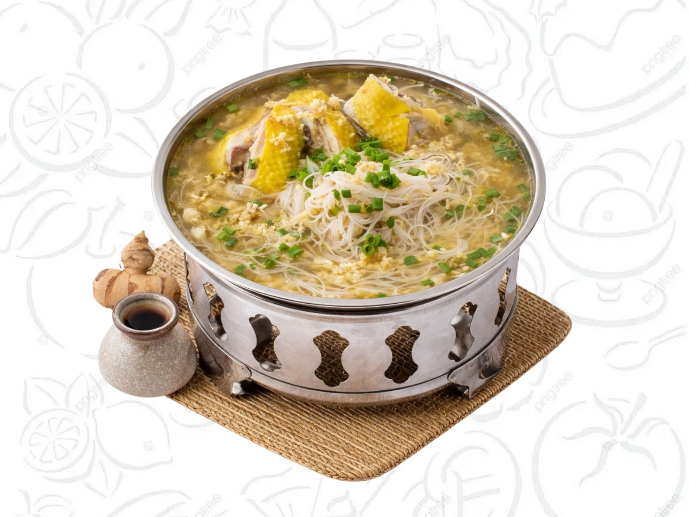

01
姜茸菜园鸡米粉
Ginger Paste Mihun w Chicken
A comforting signature mihun dish served with kampung chicken and aromatic ginger paste.
Suitable for: warm meal, family dining, elderly customers, simple lunch